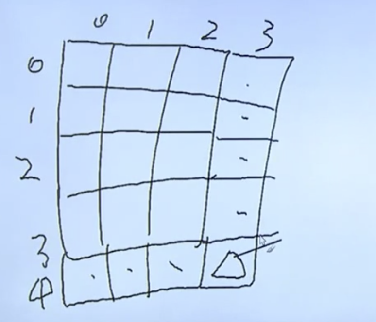
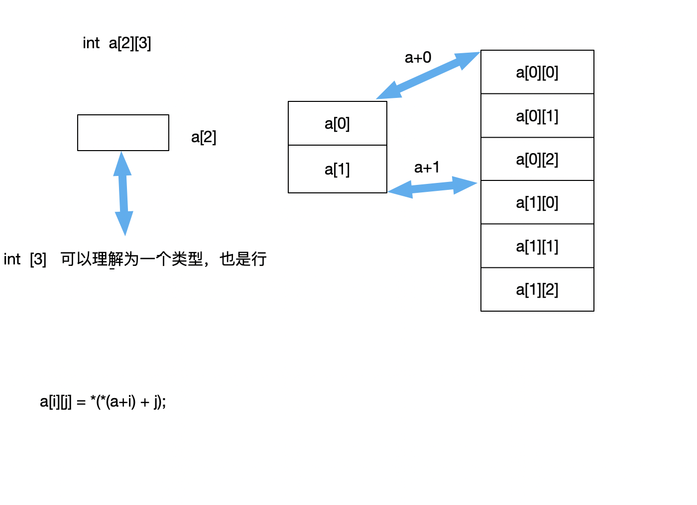
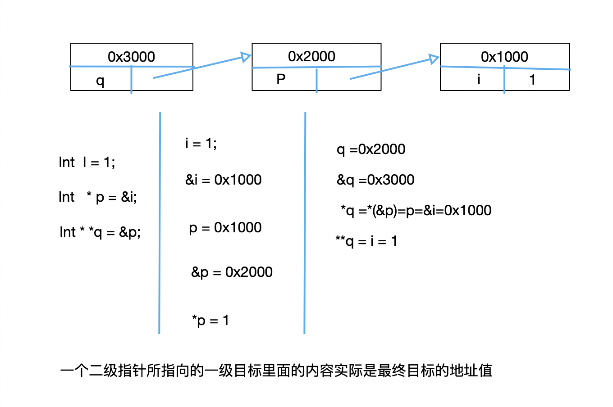
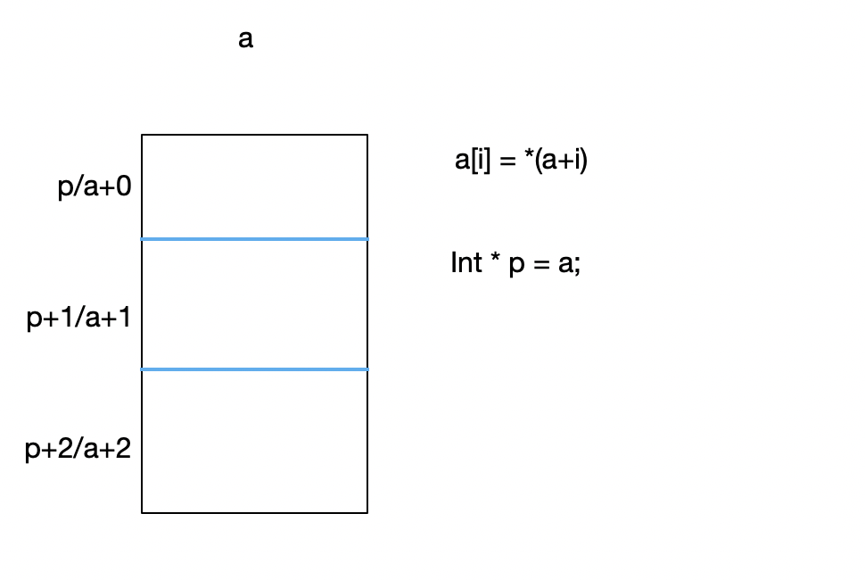
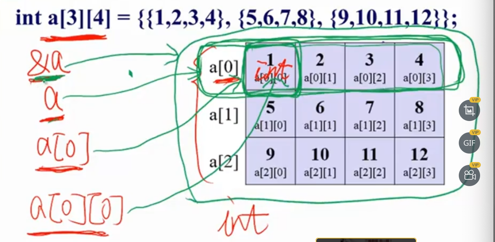
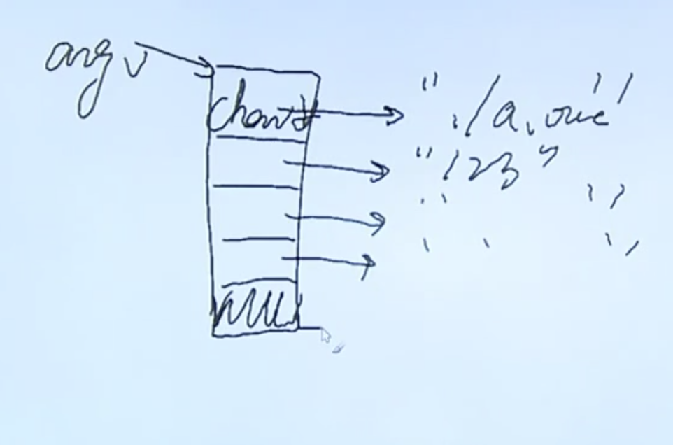

前置
1.程序
写程序前，先构想好程序的结构，而不是先从定义变量开始。
- 没有想好解决方案，不要急于动手写程序？
- 有了解决方案以后，可以按照“先粗后细，先抽象后具体”的办法，先有程序的轮廓，如有必要可以解决“建模工具”画一些图，而后再动手写程序；
- 写程序时，可以先写出程序轮廓，而后再补充变量定义等细节；
程序并不纠结于是否更优。
而在于程序结构是不是清楚，是不是容易被人看懂
1.1 写程序的过程
按照由大到小，由粗到细，由抽象到具体的方法分析、编写程序
- 程序的结构 （基本思想）
- 程序由若干个“模块”组成
- 模块之内“高内聚”（高内聚， 就是这个模块只做这个事情，不干别的。功能单一）
- 模块之间“低耦合” （当一个模块被改动的时候，只会印象它自己，而不会影响别的）
1.2 编程语言共性 （语法）
程序设计语言的构成,语言种类千差万别，但是，一般来说，基本成分不外四种：
- 数据， 用以描述程序中所涉及的数据 （数据类型）
- 运算，用以描述程序中所包含的运算；（运算符）
- 控制，用以表达程序中的控制构造；（三种类型的控制语句是如何写的，顺序，分支，循环）
- IO，用以表达程序中数据的传输； （如何输入和输出数据）
1.3 大纲
- 基本概念
- 数据类型，运算符，表达式
- IO
- 流程控制（顺序，分支，循转）
- 数组
- 指针
- 函数
- 构造类型
- 动态内存管理
- 调试工具，（gdb，make）
- 常用库函数
2. 基本概念
把内存想象成一个长长的带子,带子上面有很多小方格，每个格子都是一个字节（存储单元）。每个小方格都有它对应的地址，每个字节（单元）有八位，1B（byte） = 8b（bit）每一个位存储一个二进制的数。
2.1 变量与常量
2.1.1 常量
在程序执行过程中值不会发生变化的量，数组名是一个典型的常量，一旦数组定义了，gcc为当前的数组分配了一段空间了。然后数组的位置就定死了。数组名就是一个数组的起始位置。是一个常量，如果你在=左边写上一个常量，就表示企图更改一个常量的值；比如
1=f，显然不成立；
常量的分类
整型常量
实型常量
3.14, 5.26;
字符常量
由单引号印起来的单个字符或者转义字符，如’a’
转义字符： ‘\n’, ‘\r’, ‘\t’ ，’\015’(八进制数)， ‘\x7f’(十六进制数)
字符串常量
由双引号印起来的一个或多个字符组成的序列，如: “”(空串)
一个字符串在存储的时候，最末尾会有一个结束标记，通常称作尾0
\0.所以""是占空间的，空字符占一个字节的空间；- 合法的字符串 （””, “a”, “abXYZ”）
- 暂时不确定是否合法的字符 （”abc\n\021\018”) 因为
\018不是八进制，因为出现了8，而我们知道\0是字符串数组的末尾。所以\0到底能否插入进字符串中间，这个需要后续字符数组专题揭秘； - 字符串常量需要借助构造类型——数组来保存
'a'和"a"的区别：前者是字符常量，后者是字符串常量。
标识常量
#define， 程序中一改全改
#define PI 3.14，在程序预处理之后，宏名被宏体完整的替换；define ADD 2+3 ADD*ADD=2+3*2+3而不是(2+3)*(2+3)。 #define，处理在程序的预处理阶段，占编译时间。不占运行时间。一改全改；缺点： 不检查语法，只是单纯的宏体与宏名之间的替换；- 带参数的#define
1
2
3
4
5
6
7
8
9
10
11
12
13
14
15
16
17
int main() {
int i, j;
i = 5;
j=3;
printf("/d\n", MAX(i, j));
exit(0);
}
// gcc -E define.c
int main() {
int i, j;
i = 5;
j=3;
printf("/d\n", (i>j?i:j));
exit(0);
}- 一个特殊问题的解决方式
1
2
3
4
5
6
7
8
9
10
11
12
13
14
15
16
17
18
19
int max(int a, int b){
return a>b?a:b;
}
int main()
{
int i = 5;
int j = 3;
printf("max = %d\n", MAX(i++, j++));
printf("i=%d\tj=%d\n", i, j);
exit(0);
}
((i++) > (j++) ? (i++) : (j++))
// max = 6
// i=7 j=4
首先，max和MAX的区别，MAX只占用预编译时间，等运行的时候，实际上已经将所有宏体替换到程序中去了。不会再需要额外的时间了。而max则不同，在函数的调用位置，对当前的一个执行现场做一个压栈保存。然后去到指定的函数去执行。（跳往另外一个入口地址）然后再回来，弹栈恢复当前现场的过程。这个过程 占用了运行的时间；
什么时候用宏，什么时候用函数？在需要极致性能的场景用宏，前提是宏能满足；比如内核。在应用层面，系统层面，多用函数。因为应用层要求更高的是稳定性，而非实时性。
解决方案，需要找一个变量来接受；而不是让其继续做加运算；
1 |
|
2.1.2 变量
用来保存一些特定内容，并且在程序执行过程中值随时会发生变化的量；
当计算机执行到 int max=0 这句程序时，计算机会在内存里面找到一片存储空间（几个连续的存储单元），然后给该片存储空间取个名字叫 Max， 再把 0 这个初始值放在这个存储空间中来。并记下这个名字（Max）和这片连续的存储空间的起始的地址之间的对应关系
定义： [存储类型] 数据类型 标识符 = 值
TYPE NAME = VALUE;
存储类型 可选
2.1.2.1 标识符
当定义一个某种类型的标识符的时候，编译器会为当前的值分配一块内存空间；如何称呼这块空间，就是房间号。房间号就是标识符。编译器会给标识符（房间号）和内存地址标识做关联。当搜索变量名的时候，编译器知道要去到哪块内存地址去搜索；简单说，标识符就是这块空间的临时别名；
2.1.3 存储类型
auto, static register extern(说明型)
2.1.3.1 auto
默认，自动分配空间，自动回收空间
auto类型分配在栈上，堆主要是来进行动态内存分配的空间；堆栈不挨着
1 | int main () |
1 | void func(void) |
2.1.3.2 register
建议型关键字；
寄存器类型，资源少，速度快，寄存器存放在CPU当中，寄存器的数据比较吃紧，
1 | register int i =1; // 除非i在程序中，超高频率被使用，才建议编译器将i分配到寄存器中；至于有没有被放到寄存器中，由gcc来决定； |
register的苛刻条件；
- 只能定义局部变量，不能定义全局变量；
- 大小有限制，只能定义 32 位大小的数据类型，如double 就不可以
- 寄存器中没有地址，所以一个寄存器类型变量无法打印出地址查看或者使用；
2.1.3.3 static
静态型，自动初始化为0值或空值，并值其变量的值有继承性（继承性指的的static在内存中只此一份，所以下次使用的时候还是基于上一次的值，而不会被初始化）。另外，常用于修饰变量或函数
1 | void func(void) |
static 修饰函数：
防止该函数对外扩展，（简单说就是该函数只能在当前文件下使用，在别的文件下没法使用；）
1 | static void func(void) |
2.1.3.4 extern
说明型， 意味着不能改变被说明的变量的值或类型；
1 | // proj.h |
2.1.4 变量的生命周期和作用范围（即作用域）
- 全局变量和局部变量
- 局部变量和局部变量
- 参考图片
3. C程序
4.1 程序规范
以helleworld为例对写程序的思路提出如下要求:
1 |
|
- 头文件正确包含的重要性；
- 知道程序中的所有警告
gcc file.c -Wall - 如何调试段错误，先把程序中的所有警告调好；
- 以函数为单位来进行程序编写；
- 声明部分 和 实现部分（变量先定义，后使用）
- return 0 （exit(0) 在单进程单线程的程序中 和 return 0意义一样的，exit(0)是给它父进程看的，当前main函数的父进程是shell）
- 多用空格空行
- 添加注释
1 | echo $? # 上一条语句执行的状态 |
4.2 注释
#if #endif 注释
1 |
|
4.3 编译
1 | #gcc hello.c |
gcc过程(c源文件到可执行文件需要经过的顺序)
c源文件 - 预处理 - 编译 - 汇编 - 链接 - 可执行文件
- 预处理
gcc -E hello.c > hello.i(预处理hello.c，保存至 hello.i 文件)以#开头的语句部分都是在预处理阶段解决掉的；`include`或者 `if define` - 编译阶段
gcc -S hello.i(编译hello.i)默认会生成一个 .s文件，编译成汇编文件； - 汇编阶段
gcc -c hello.s生成一个 .o文件； - 链接阶段
gcc hello.o -o hello(链接.o文件 生成可执行文件 hello)生成可执行文件hello;
4.3.1 C编译
1 | gcc -o test test.c # 把test.c 编译成一个可执行文件 test |
4.3.2 多个.c文件
- main() 里的代码太长了 适合分成几个函数
- 一个源文件太长适合分成几个文件
- 两个独立的源文件不能编译形成可执行的程序
4.3.3 头文件
把函数原型放在一个头文件（以.h结尾）中，在需要调用这个函数的源代码文件(.c文件)中 #include 这个头文件，就能让编译器在编译的时候知道函数的原型
1 | # main.c max.c max.h |
5. 数据类型
- 不同数据类型所占字节数
- 存储区别
- 不同类型的数据间转换
- 特殊性：
5.1 基本类型
- 数值类型
- 整型
- 短整型 short （2个字节，16位）
- 整型 int （4个字节，32位）
- 长整型 long （4个字节，32位）
- 浮点型
- 单精度型 float （4个字节，32位）
- 双精度型 double （8个字节，64位）
- 整型
- 字符类型 char （1个字节，8位）
1.1.1 整形存储
整型的存储都是以补码的形势来存储的
补码：正数的补码是它二进制本身，负数的补码是它绝对值的那个数的二进制形式取反再加1的结果；
254 -> unsigned int(无符号 int) -> 32位
-254 -> 254-> 1111 1110 取反 +1
- 有无符号的区别，最高位到底代表是符号还是正常有效值；有符号的话，为0表示正数，为1表示负数；
(254)10 => (11111110)2
方法： 除2取余倒序排列；（转2进制）11111110
除8取余倒序排列；（转8进制）376
除16取余倒序排列；（转16进制） FE进制表示
- 254 十进制
- B11111110 二进制
- 0376 八进制
- 0xFE 十六进制
1.1.2 浮点型存储
1 | 3.14 * 10^0 |
浮点数是以0.314 * 10^1的方式来存储3.14的
整数部分为0，只是在意精度部分是多少。然后在意指数部分是多少。
- 浮点数在32 个bit上是如何存放的
0～22位（共23个bit）用来记录精度部分。 22位～30位（共8个bit） 用来存储的是指数部分。最高位（第31位） 表示的是符号位置，表示是正数还是负数；
举例
0.000789 -> 0.789 -> 10^3
精度部分存储 789的二进制形式，8个位存储3
- float 32位
- double 64位 ，比float多出来的32位完全放在精度的控制上
1.1.3 char存储
- char 8位。 -128～127
- unsigned char 8位。 0～255
1.1.4 不同类型的数据间转换
1.1.4.1 精度丢失
1 | float f = 3.9; |
1.1.4.2 隐式转换
编译器默认做的
1 | int i; |
1.1.4.3 显式转换
强制类型转换
1.1.4.4 特殊性：
- 布尔型bool
- float类型；
1.0/3*3 ！= 1 - char型是否有符号，不知道，一个未定义的行为
- 不同形式的0值；
1 | 0; |
- 数据类型与后续代码中所使用的输入输出要相匹配（防止自相矛盾）
1.2 构造类型
- 数组
- 结构体 struct
- 共用体 union
- 枚举类型 enum
1.2.1 enum
*语法: *
1 | enum 标识符 |
1 | enum day |
*把enum当宏使用: *
1 | enum { |
** 这种场景可以用 enum代替宏的使用: **
因为宏经过预编译之后被替换掉了，宏的部分会被替换。影响调试。
当然enum不是万能，并不能替代宏；宏还可以传递参数
1.2.2 结构体类型
1 | struct student { // student 不是变量名而是类型 |
** 定义结构体变量的方式: **
student tudent1,student2;
(结构体类型名) (结构体变量名)
1 | struct student { |
** 结构体赋值: **
1 | int main() |
** 结构体内存 **
1 | struct simp_st { |
- 一个公式
address（当前准备存储的变量的地址）%（你当前要存放变量的sizeOf）
如果能整除的话，那么这个变量就存放在这里，如果这个表达式不成立，那么address就得 + 1；
举例子说明,首先下面是一段内存
1 | ---------- |
1 | // 目标结构体 |
*解释 *
首先内存第一个地址的值是0，结构体的第一个属性是int，我们知道int占4个字节。0/4 能整除，因此第一个int占据从0-3 这个几个内存中，然后 char占1个字节，4/1能整除，因此第二个char占据了4这个内存中。接着结构体第三个属性为float，占据4个字节。内存地址5/4没法整除，当前内存++，分别到6，7，都无法整除4.到了8，8/4能整除，所以，从8打11这一段内存就存放着float这个属性，接下来又是char12/1能整除，所以char属性占据了char12这个内存地址；
值得注意的是，不同的操作系统内存对齐的方式是不同的；因此在socket编程中，我们传过去的结构体数据在末端一定不能做对齐；因为不知道不同平台到底是什么字节对齐的
** 结构体对齐 **
1 | struct point { |
这个操作在网络编程当中很常用；
总结
如果没有内存对齐，就是指定attribute((packed))的话，那么结构体内存的大小就是各个属性的sizeof累加的结果。如果没加就需要考虑内存对齐的问题，不同的机器内存对齐的方式是不同的。因为在跨机器编程比如socket编程当中，是需要指定attribute((packed))来确保数据的完整性和 安全性；
1.2.2.1 结构体作为函数参数传递给函数（值传递，地址传递）
1 | void renew (struct student mike) { |
- 结论
结构体的传入是 值拷贝，函数内部执行的是副本
1.2.2.2 当把结构体当成形参传递的时候，意味着什么
1 | void func (struct simp_st b) |
- 小结： 所以我们一般不会这么去用。会有非常严重的性能浪费；一般我们会传递结构体指针；
1.2.2.3 结构体作为函数返回值时
总结： 结构体作为函数返回值时，相当于copy一份给调用者
1.2.2.4 指向结构体变量的指针
1 | int main() |
1.2.2.5 指向结构体变量的指针作为参数传入函数
1 | void renew (struct student mike) { |
1.2.2.6 结构体数组
1 | int main() |
1.2.2.7 链表
- 动态地 申请内存空间
1 | int *pint = new int(1024); // 开辟一片内存存储空间并返回起始地址； |
- 动态地 建立链表节点
1 | struct student { |
1.2.3 共用体
共用体和结构体语法很像，但截然不同的是，结构体各个成员会占用不同的内存，结构体整体内存 >= sizeof（所有属性）， 因为有内存缝隙的 概念，所以有时候会大一些；而结构体的内存体积取决于最大属性的体积；共用体所有成员占据同一段内存；共用体使用了内存覆盖技术，同一时刻只能保存一个成员的值，如果对新的成员赋值，就会把原来的值覆盖掉。
** 语法**
1 | union 共用体名 { |
- 产生
- 意义
- 类型嵌套
- 定义变量（变量，数组，指针），初始化及成员引用 (变量名.成员 指针名->成员)
- 占用内存大小
- 函数传参（值，地址）
- 位域
1.3 指针类型
1.4 空类型 void
6. 类型转换
存储涉及到2进制，8进制，10进制，16进制。这几种进制之间的转换首先要区别开，如何去获得一个二进制
2.1 十进制转二进制
除2取余，余数倒序排列
254 -> unsigned int -> 32位 （4个字节）
254（10进制）-> 11111110 (2进制) -> 376 (8进制) -> FE(16进制)
c语言程序当中是不识别二进制的
254 默认10进制
B11111110 二进制
0376 八进制
0xFE 十六进制
2.2 补码
一个正数的补码形式就是 它二进制本身,负数的补码是它绝对值的二进制形式取反 + 1
254 -> unsigned int -> 32位
-254 -> 254 -> 1111 1110 取反 + 1
7. 运算符和表达式
表达式与语句的区别
- 运算符部分：
- 每个运算符所需要的参与运算的操作个数
- 结合性
- 优先级
- 运算符的特殊性
- % 要求 除数，被除数都是整型
- 位运算的重要性
8.1 自增和自减
运算符在前，先进行计算，再取变量值使用变量在前， 先取变量值使用，再进行计算
8. 位运算
3.1 >> <<
位运算（左移右移）基本等同于乘2除2运算,像汇编当中乘以多少，除以多少，几乎按这种方式来实现的
1 | int i = B1100 = 12 |
3.2 ~ （取反）
1 | int i = B1100 = 12 |
3.3 按位或
按位或的计算原则是，同一个位上，两者有一者为1就为真，两者都为假才为假
1 | int i = B1100; |
3.4 按位与
按位与的计算原则是，同一个位上，两者有都为1就为真，否则为假
1 | int i = B1100; |
3.5 ^ (相同为0， 不同为1)
亦或计算原则， 同一个位上，相同为0， 不同为1
1 | int i = B1100; |
3.6 位运算的重要意义
- 将操作数中第N位 置1， 其他位不变；
1 | //num = num | 1 << n // 把某一位 置1的话，把1左移 N个位 |
- 将操作数中第N位 清0， 其他位不变；
1 | //num = num & ~(1 << n) // 把某一位 置1的话，把1左移 N个位 |
测试第n位： if (num & i 1 << n)
从一个指定宽度的数中取出其中的某几位 （练习题）
9. 内核代码位置
1 | cd /linux/include/linux |
10. 宏
- #开头的是编译预处理指令
- 它们不是C语言的成分，但是C语言程序离不开它们
- #define 用来定义一个宏；
- define (定义一个宏)
1 |
|
4.1 save-temps
对一个 .c 文件执行
1 | gcc 02.c --save-temps |
生成 四个文件
02.i02.s02.oa.out
过程依次是
.c -> .i -> .s -> .o -> a.out
.c是源代码，经过编译预处理之后变成 .i 这种中间结果文件，
当中所有编译预处理指令都执行完，比如 define 宏需要替换掉;
然后由于编译器对 .i文件进行编译 生成汇编代码 .s文件；
然后汇编代码文件，进行汇编变成目标文件， 目标文件再经过链接
之后形成一个可执行的东西；
- 查看 .i 文件
1 | tail 03.i |
1 | extern void funlockfile (FILE *__stream) __attribute__ ((__nothrow__ , __leaf__)); |
** 同样的可以把 “%f\n” 也替换成宏**
1 |
|
4.2 宏的缺点
不检查语法，在预处理或者编译阶段是不报错的；
4.3 define
- #define <名字> <值>
- 结尾没有 分号，因为不是C的语句
- 名字必须是一个单词，值可以是各种东西
- 在C语言的编译器开始编译之前，编译预处理程序(cpp)会把程序中的名字换成值；
- 完全的文本替换
- gcc –save-temps
- 如果一个宏的值中有其他的宏的名字，也是会被替换的
- 如果一个宏的值超过一行，最后一行之前的行末需要加\
- 宏的值后面出现的注释不会被当作宏的一部分
1 |
|
1 |
|
4.4 没有值的宏
- #define_DEBUG
- 这类宏是用于条件编译的，后面有其他的编译预处理指令来检查这个宏是否已经被定义过了；
4.5 预定义的宏
用来表示一些特殊的东西，可以让编译器替我们插入一些特殊的值。
1 | _LINE_ //这个源代码所在当前的行号； |
4.6 像函数的宏
#define cube(x) ((x)*(x)*(x))
宏可以带参数
1 |
|
打开 .i 文件
1 | int main(){ |
4.7 错误定义的宏
#define RADTODEG(x) (x*57.29578)#define RADTODEG(x) (x)*57.29578
1 |
|
被预处理的结果
1 | int main() { |
我们发现 被预处理的结果是不符合我们的要求的；
4.8带参数的宏的原则
一切都要有括号
- 整个值要有括号，指的是整个宏的值有括号
- 参数出现的每个地方都要括号
#define RADTODEG(x) ((x)*57.29578)
可以带多个参数
- #define MIN((a,b) ((a)>(b)?(b):(a))
也可以组合（嵌套）使用其他宏
在大型程序的代码中使用非常普遍
可以非常复杂，如“产生”函数
- 在# 和 ## 这两个运算符的帮助下
存在中西方文化差异
部分宏会被inline函数替代
4.9 什么时候用宏 什么时候用函数
应用求稳定，用函数
追求极致性能，用宏
4.10 include “” 还是 <>
include 做了什么？
include就是把头文件里头所有的文本插入到include所在.c文件的那一行.
- #include有两种形式来指出要插入的文件
- “”要求编译器首先在当前目录（.c文件所在的目录）寻找这个文件，如果没有，到编译器指定的目录去找
- <> 让编译器只在指定的目录去找
- 编译器自己知道自己的标准库的头文件在哪里
- 环境变量和编译器命令行参数也可以指定寻找头文件的目录
4.11 头文件 （.h文件）
- 在使用和定义这个函数的地方都应该 #include 这个头文件
- 一般的做法就是任何.c都有对应的同名的.h,把所有对外公开的函数的原型和全局变量的声明都放进去
- 在函数前面加上static 就使得它成为只能在所在的编译单元中被使用的函数
- 在全局变量前面加上static就使得它成为只能在所在的编译单元中被使用的全局变量
4.12 变量的声明
1 | // add.h |
- int i； 是变量的定义
- extern int i； 是变量的声明
4.13声明和定义
- 声明是不产生的代码的东西
- 函数原型
- 变量声明
- 结构声明
- 宏声明
- 枚举声明
- 类型声明
- inline函数
- 定义是产生代码的东西
11. typedef
为已有的数据类型改名
typedef 已有的数据类型 新名字;
1 | typedef int INT; |
5.1 typedef 和 define的区别
1 |
|
** 更多示例**
1 | typedef int ARR[6]; ---> int [6] -> ARR; |
1 | struct node_st |
数组
类型 数组名[常量表达式]
1 | float sheep[10] |
12. 一唯数组
1.1.1 定义
【存储类型】 数据类型 标识符 【下标】
1.1.2 初始化
不初始化
全部初始化
部分初始化
1 | int main () { |
1.1.3 元素引用
数组名【下标】
1 |
|
下标
查找块
1.1.4 数组名
当前数组的起始位置，数组名本身就是表示地址的一个常量。
常量： 程序执行过程当中不会发生变化的量；正因为数组名是常量，所以它不能无条件出现在数组的左边；
1 |
|
1.1.5 数组越界
溢出数组所在内存区域
1.1.6 fb
1 |
|
1 | // fb加个排序 |
13. 二维数组
1.2.1 定义，初始化
【存储类型】 数据类型 标识符 【行下标】 【列下标】
1 | int a[3][3] = {{1,2,3}, {4,5,6}, {7,8,9}}; |
1 | int main() |
1.2.2 二维数组元素引用
数组名[行标][列标]
int a[3][4] // 定一个三行四列的二维数组
1.2.3 存储形式
顺序存储，按行存储,二维数组在内存中的存储， 是拉平的
1 | ---------- |
- 深入理解二维数组
| 1 a[0][0] | 2 a[0][1] | 3 a[0][2] | 4 a[0][3] |
|---|---|---|---|
| 5 a[1][0] | 6 a[1][1] | 7 a[1][2] | 8 a[1][3] |
| 9 a[2][0] | 10 a[2][1] | 11 a[2][2] | 12 a[2][3] |
1.2.4 二维数组练习题
1.2.4.1 行列互换
1 |
|
1.2.4.2 求最大值及其所在位置
1 |
|
1.2.4.3 求各行与各列的和

1 | static void sum(void) |
1.2.4.4 矩阵乘积
1 |
|
1.2.5 深入理解二维数组

1.2.5.1 三维数组
a[5][3][4] 数据立方体
5 -> 片
3 -> 行
4 -> 列
在内存中依然是打平存放；
14. 字符数组
1.3.1 定义，初始化，存储特点
【存储类型】 数据类型 标识符 【下标】。。。
1.3.1.1 单个字符初始化
1 | char str[3] = {'a','b','c'} |
char c[] = {‘C’, ‘h’, ‘i’, ‘n’, ‘a’};
// c[0] = C c[1] = h c[2]= i c[3]=n c[4]=a
1.3.1.2 用字符串常量初始化
1 | char str1[6] = "hello"; // 最后一位 以 '\0' 结尾 |
char c[] = “China”
// c[0] = C c[1] = h c[2]= i c[3]=n c[4]=a c[5]=\0
1.3.2 输入输出
1 | int main() |
1.3.2.1 单词计数
1 |
|
1.3.3 字符数组注意事项
所有字符串都是以 \0 来结尾的；所有以 \0结尾 的字符数组都可以被看为字符串
1 | char c[6] = "China"; //只可以在数组定义并初始化的时候 |
指针
- 变量与地址
- 指针与指针变量
- 直接访问与间接访问
- 空指针与野指针
- 空类型指针
- 定义，初始化，书写规则
- 指针运算
- 指针与数组
- 指针与一维数组
- 指针与二维数组
- 指针与字符数组
- const与指针
- 指针数组和数组指针
- 多级指针
15. 变量与地址
变量名： 变量名就是用户对某一块内存空间的抽象表示；想把这块儿内存置成100，就写int i = 100;变量名就是某个内存空间的别名；
地址： 指针就是地址，指针就是指向某个内存空间地址的地址值；
1.1 变量的三要素
int a = 3 在内存中， 即产生 0x0012FF78，3，a 三个要素。
- 0x0012FF78即变量的地址， 把这个变量的地址称为“指向该变量的指针”；
- 3即变量值；
- a即变量的签名；
1.2 输出变量的地址
地址运算符 “&”
int a = 3; printf("%x", &a)
16. 指针与指针变量
语法
TYPE NAME = VALUE；
1 | int i = 1; // type 为 int |
2.1 非法操作（野指针）
1 | int * p = &i; // 合法操作，指针一旦定义出来，就要给一个明确指向；没有的话，下回分解 |
2.2 指针变量
专门用于存放指针（某个变量的地址）的变量
1 | int c = 76; |
则*pointer： 为pointer所指向的存储单元的内容；是变量c。
因此*pointer可以当作 变量c 来使用
2.3 指针变量的地址
指针变量也是变量，是变量就有地址
1 | int main() { |
2.4 指针变量示例
1 | int main(){ |
2.5 指针作运算 (取地址 和 取 * 和关系运算)

2.5.1 取地址
要获取某个变量在内存中的房间号
2.5.2 取*
找到现在给定房间号里面存放的内容
17. 直接访问和间接访问
3.1一级间接访问和 二级间接访问
1 | int main () |
3.2 指针关系运算
当两个指针指向的是一块连续内存空间的时候， 比如两个指针指向同一个数组。在这种情况下，两个指针可以做一个关系上的比较；
++ --
++ – 运算实际上改变指针位置；
3.3 指针变量类型与指针变量大小
1 | int main () |
18. 空指针与野指针
1 | int main () |
4.1 野指针
当前这个指针的指向是不确定的，或者压根就没有指向；但是直接使用这个指针了。
1 | int main() |
1 | int main() |
4.1.1 如何杜绝野指针
指针一经定义，就必须有一个明确的指向，没有暂时没有指向的话，就先指向NULL；
19. 空类型
1 | void * p = NULL; // 即 空类型 void * 是一个百搭的类型，任何类型的指针值都可以赋值给它。void * 也可以把自己的值赋值给任何类型的指针； |
5.1 空类型的使用场景
1 | void *memcpy(void *dest, const void *src, size_t n); |
20. 运算符优先级
上面优先级比下面高
- 后置++ –
- 前置++ – 逻辑非 (!) * & // 同级别，优先级由右往左结合顺序， 离目标越近，优先级越高
- 算术运算符
- 关系运算符
- &&和｜｜
- 赋值运算符
- &&和｜｜
- 关系运算符
- 算术运算符
- 前置++ – 逻辑非 (!) * & // 同级别，优先级由右往左结合顺序， 离目标越近，优先级越高
- 同级别，优先级由右往左结合顺序， 离目标越近，优先级越高
如
1 | &*pointer = &(*pointer) |
(*pointer)++ 不等于 *pointer++
(pointer)++ 是先 做取运算，得到的int类型自增， pointer++ 则是 指针变量移位，然后再取运算
*pointer++ 的含义
假设： pointer当前所存的地址是0x00000100
- 若pointer 的指针变量基类型是 指向一个 int或实型（占4个字节），则pointer++ 等于 iptr + 1*4 = 0x00000104
- 若pointer 指向一个 字符型（占1个字节），则pointer++ 等于 iptr + 1*1 = 0x00000101
1 | int main() { |
** 小结**
指针和指针变量是不同的。指针是地址，指针变量就是一个普通的变量。
pointer指的是这个指针变量 所指向的那片内存空间里面的内容。
(pointer)++ 不等于 *pointer++
21. 指针与数组
数组名代表数组首元素的地址 （数组名相当于指向数组第一个元素的指针）；
数组名不是变量，不能给a赋值；int *p = &a[0];a++是没有意义的（a只是个常量），但p++会引起p变化。
p可以指向数组最后一个元素以后的元素。
指针做加减运算时一定注意有效的范围；（指针理论上能够在内存中自由的漂移，很可能移除某一个数组的范围，有的时候就比较危险了）

7.1 数组名代表数组首元素的地址
数组名是指向数组第一个元素的指针；
- 对于数组a[10], 数组名 a代表数组 a[10]中第一个元素a[0]的地址； 即 a 与 a[0]等价
- 注意： a是地址常量，不是变量，不能给a赋值；
7.2 创建一个匿名数组
指针和数组的关系，其实就是一种引用方式而已。你的一维数组名和一级指针之间的关系其实除了一个是变量，一个是常量之外。完全可以等价代换。
1 | int main() |
7.3 利用指针变量引用数组元素
- 若定义
- 数组 int a[10]; 指针 int * pointer;
- 则:
- pointer =a; 等价于pointer = &a[0];
- 数组访问
pointer+ i; 等价于 a+i; 等价于 &a[i];
*(pointer+i); 等价于 *(a+i); 等价于a[i]; - 表示形式
pointer[i] 等价于 *(pointer+i);
1 | int main () { |
7.4 抽象公式
1 | int * p = a; |
7.5 重置指针变量
1 | int a[3]; |
7.6 需要注意的问题
int * p = &a[0];,* a++是没有意义的（因为a是个常量），但p++会引起p变化；* p可以指向数组最后一个元素以后的元素；（因为p是内存中的一个指针），所以指针做加减运算时一定注意有效的范围。
1 | int a[5], |
示例
1 | int main(){ |
7.7 指向二维数组的指针
7.7.1 遍历数组元素
1 | int main(){ |
如上所示， 会将这个数组的内容都打印出来了，因为二维数组会被拉平存储到一段连续的内存空间当中
7.7.2 二维数组行列指针
1 |
|
小结：
所以a除了是二维数组的数组名（地址常量）之外，在使用上比较偏向一个指向行指针。
7.7.3 能够接收二维数组指针的指针变量
引子
1 | { |
7.7.4 另一段程序
1 | int main(){ |
程序分析
从 p = a 开始
a相当于指向a[3][4]的“第一个元素”的指针；
所谓“第一个元素”是指一个“包含4个int型元素的一维数组”；
所以，a相当于一个“包含4个int型元素的一维数组”的地址；
因此，p的基类型应该是： “包含4个int型元素的一维数组”
变量定义语句的语法为： int (*p)[4];
*p(数组)
p -> | (p)[0] | (p)[1] | (p)[2] | (p)[3] |
7.7.5 利用指针变量引用多维数组中的数组
((p+i)+j)是什么？
p 是指向一个“包含4个int型元素的一维数组”；
p+i 是第i+1个“包含4个int型元素的一维数组”的地址;
p+i 等价于&a[i]；
*(p+i)等价于a[i]；
*(p+i)+j 等价于 a[i]+j; // 这里把a[i] 当作一个指针来看 因此， a[i]+j 等价于 &a[i][j];
((p+i)+j) 等价于 a[i][j];
7.8 指针与字符数组
1 | int main () |
7.8.1 字符数组拼接
1 |
|
7.8.2 字符串长度和字符串字节数
1 | char str[] = "hello"; |
7.8.3 字符指针跟字符数组的区别
1 | char *str = "hello"; |
22. 字符串与指针
指向字符串的指针
- 指向字符串的指针变量： char a[10]; char *p; p=a;
数组和字符串太接近了。那怎么去定义指向字符串的指针呢？也很简单， 我首先定义一个字符数组，它就是用来存放字符串的。 我们以前讲过字符串和字符数组其实区别就在于有没有最后的反斜杠零， 本质上都是字符数组。
1 | int main(){ |
8.1 字符串指针举例
1 | int main() { |
23. const与指针
const是把某些内容常量化
1 | const int a; |
9.1 变量值常量化
1 | const int a; |
9.2 常量指针
指针的指向可以发生变化，但是指针所指向当前的那块内存的值是不可以发生变化的；
1 | // 常量指针， const int *p; 和 int const *p; 类型在前面或者后面 关系不大，表示相同的意思 |
1 | int main () |
举例：
1 | int open(const chart * pathname, int flags); // 常量指针，保护pathname值不被篡改 |
9.3 指针常量
int *const p;
指针常量指 指针的指向永远不能发生变化；但是指针指向的值可以有变化；
9.4 如何区分到底是 常量指针，还是指针常量
1 | const int *p; // 如果先碰到const关键字，就把常量先念出来 |
9.5 两个const修饰
const int *const p;
1 | int main () |
9.6 指向符号常量的指针
const int * p;
当把p定义成一个指向符号常量的指针的时侯， 然后再让这个p指向什么东西， 它所指向的那个东西就不能被修改了。我们就不能通过p再去修改 它所指向的那个东西了。
- 深坑啊,要留意
1 | int main() { |
9.7 再谈一维数组的地址
数组名相当于指向数组第一个元素的指针
1 | int main() { |
根据C语言的规范 *(&a) 等同于 a; 即a数组第一个元素的内存地址
*(&a) + 1 等同于 a+1; 即a数组第二个元素的内存地址
&a的管辖范围是整个数组a。c语言规范中，当它前面出现*时，管辖范围降级，即堕落成了 a[0]的地址；
9.8 总结
数组名相当于指向数组第一个元素的指针
- &运算符 - 升级
若 a 是指向数组第一个元素的指针，即a相当于 &a[0];
- &a是“指向数组”的指针；&a+1将跨越16个字节；
- &a相当于管辖范围 “上升” 了一级;
- *运算符 - 降级
*a是数组的第一个元素a[0]；即 *a等价于a[0]；
- *a 相当于管辖范围“下降”了一级；
9.9 指向二维数组的指针
二维数组的定义
- 二维数组a[3][4]包含三个元素： a[0] a[1] a[2]
- 每个元素都是一个“包含四个整型元素”的数组
| 1 a[0][0] | 2 a[0][1] | 3 a[0][2] | 4 a[0][3] |
| 5 a[1][0] | 6 a[1][1] | 7 a[1][2] | 8 a[1][3] |
| 9 a[2][0] | 10 a[2][1]| 11 a[2][2]| 12 a[2][3]|
- 二维数组的第一个元素是a[0];
- a[0]是一个“包含四个整形元素”的一维数组；
推论
a 与 &a[0] 等价
a[0] 与 &a[0][0] 等价
a[0] 与 a 等价
a[0][0] 与 *a 等价
9.10 总结
三条规律
1） 数组名相当于指向数组第一个元素的指针；
2） &E相当于把E的管辖范围上升了一个级别；
3） *E相当于把E的管辖范围下降了一个级别；
24. 指针与函数
10.1 指针用作函数参数
1 | void Rank(int *q1, int *q2) { |
10.2 将数组名作为实参
1 | void sum(int *p, int n) { |
10.3 “数组名” 做形参
1 | // c++ 编译器将形参数组名 作为 指针变量来处理！ |
当程序里，把一个指针变量或者是数组的名字，传递给一个函数的时候，是挺危险的，因为这个函数拿到的，是这个变量或者是数组的地址， 它拿到了地址，它就可以直接对地址里面存放的这些值，进行肆意的修改，那有没有一种办法，可以呢 使我既能够把这个地址传递给某个函数，又能够确保不让这个函数随意的修改这片地址里面的值呢？
- 如何 “限制” 指针的功能
- 如何“限制”指针实参的功能
10.4 即指向符号常量的指针
1 | int sum(const int array[], int n){ // 补充为const |
符号常量声明语句
- const 数组类型 常量名 = 常量值；
- 数据类型 const 常量名 = 常量值；
10.5 指针用作函数返回值
函数的返回值可以是多种类型
- 返回整形数据的函数
int max(int x, int y); - 返回指针类型数据的函数
int *min(int x, int y)- 函数名字前面表示函数的类型 *
1 | // int arr[][4] 除了这么定义，还可以 int *(arr)[4] |
- 分析一下返回结果， 又一个需要注意的深坑
1 | int *getInt1() { |
- 验证
1 | int *getInt1() { |
那既然如此，有什么办法解决这个问题
- 静态局部变量
1 | int *getInt1() { |
- 什么是静态局部变量
** 静态局部变量 **
函数中局部变量的值在函数调用结束后不消失而保留原值
即其占用的存储单元不释放，在下一次该函数调用时，仍可以继续使用该变量；
1 | void function() { |
- 小结
指针与函数
指针用做函数参数
函数拿到地址可对其所指内容进行修改；
可以使用const来“限制”指针的功能；
指针用做函数返回值
必须确保函数返回的地址是有意义的；
返回全局变量或静态局部变量；25. 指针数组和数组指针
11.1 数组指针
归根结底是一个指针，是指向数组的指针。
【存储类型】 数据类型 （*指针名）【下标】 = 值；
如： int (*p)[3]; ---> type name ----> int[3] *p
解析：
定义一个指针变量 p, 用来指向
int[3]类型的元素的起始位置。原来int * p的时候，p+1的操作是移动一个int的大小。如果p的类型 变成了int [3]的话，p+1的操作是一下移动三个 int 元素的大小。所以数组指针是在某种 大小的数组中进行移动。
1 |
|
11.2 指针数组
归根结底是一个数组
【存储类型】 数据类型 * 数组名 【长度】
如： int * arr[3]; ---> TYPE NAME ---> int *[3] arr;
11.3 指针数组与数组指针的区别
1 | int main() |
26 .多级指针
1 | Line1 int num = 1; |
多级指针的本质，只是C语言的一个书写规范
，事实上任何指针都可以保存任何地址；
- 多级指针的存储的值的推理过程
1 | Line1 int num = 1; |
函数
- 函数的定义
- 函数的传参
- 函数的调用 （嵌套和递归）
- 函数与数组
- 函数与指针 （指针函数， 函数指针， 函数指针数组）
27. 函数的定义
数据类型 函数名 （【数据类型 形参名 。。。】）
函数的类型是指 函数的返回值的数据类型
1.1.1 main函数
1 | /** |
1 | ./main /etc/a*.conf |
因为shell 会自动解析通配符，把结果都解析出来。

图示：char * argv 数组模型
** 输出argv**
1 | int main (int argc, char * argv[]) { |
1.1.2 C语言使用函数之前也需要先声明
函数在使用前都要声明，除非被调用函数的定义部分已经出现在主调函数之前, 在C语言中，函数声明就是函数原型。
1 |
|
28. 函数的传参
1.2.1 值传递
1 | int printf_value(int i, int j) { // 参数i j 随着 print_value 调用栈执行结束就释放掉了。 |
1.2.2 地址传递
1 | int swap (int * i, int * j) { |
29. 函数的调用（嵌套调用 和 递归调用）
1.3.1 函数的调用方式
- 函数调用作为独立语句，
stringPrint(); - 函数作为表达式的一部分,
number = max(numA,numB)/2; - 以实参形式出现在其他函数的调用中,
number = min(sum(-5, 100), numC);
1.3.2 嵌套调用
1 | int minus(int a, int b, int c) { |
30. 函数与数组
1.4.1 函数与一唯数组
问题：封装一个printf_arr方法来遍历数组；应该如何定义 printf_arr 的行参
1 | int printf_arr(int a[]) |
1 | void print_arr(int *p) |
** 解决方法**
将数组的长度，当做第二个参数传入给 子函数。
1 | void print_arr(int *p, int n) |
1 | void printf_arr(int p[], int n); |
** 示例**
1 | int main() { |
** 逆序**
1 | void func(int *p, int n) { |
1.4.2 函数与二维数组
1 |
|
问题： 同样的把输出放到一个独立的函数中去，也就是考察一下 二维数组应该如何给函数传参
这个问题实际考察点在于 二维数组如何 过实参给函数，以及函数的二维数组行参应该如何定义
1 | // 第一种, 用一个二维数组的指针去接收 |
1 | // 第二种，用一个普通一维数组指针去接收 |
1 | // 第三种 |
1 | // 第四种 |
** 小结 **
1 | int a[M][N] = {...}; |
二维数组 参与传参的一些基本内容
| a[i][j] | *(a+i)+j | a[i]+j | p[i] | *p |
|---|---|---|---|---|
| q[i][j] | *q === *(q+0) | q | p+3 | q+2 |
| int | int * | int * | int | int |
| int | int * | int (*)[N] | int * | int (*)[N] |
1.4.2.1 示例： 求平均数
1 |
|
1.4.2.2 二维数组什么时候传行指针，什么时候传列指针
当不区分行列的时候，可以把它当作一个大的一维数组。那就传递指针。 如果要区分行列来做某件事情的时候，那就需要把行指针传递过去。
1.4.3 函数与字符数组
1 | int main () { |
1 | //实现一个 mystrcpy 用于拷贝 |
1 | //实现一个 mystrncpy 用于拷贝 |
31. 函数与指针
指针函数, 函数指针, 函数指针数组
1.5.1 指针函数
一个函数的返回值为指针，即为指针函数
返回值 * 函数名(形参);如： int * fun(int);
引子
1 | // 从find_num 这个函数说起，这个函数并不纯，而且没有实现它的功能； |
1 |
|
1.5.2 函数指针
一个指针指向的是函数， 在C语言里面。你并不能用一个普通变量去接收 函数啊，或者结构体等等数据类型，必须要使用相同的类型变量去接收相同的类型。比如函数要用函数指针变量去接收；
类型 (指针名) （形参）
如： int (p)(int);
1 | int add (int a, int b) |
1.5.3 函数指针数组
引子
1 | int add (int a, int b) |
1.5.4 引出函数指针数组
语法：
类型 （数组名[下标]）（形参）；
如: int (arr[N])(int);
arr是一个数组，这个数组有N个元素。这N个元素都是指向函数的指针。
1 | int main() |
1.5.5 指向指针函数的函数指针数组
int *(*func[N])(int)
32. 函数的执行过程
1.6.1 main函数 —— 函数执行的入口
- 遇到函数，开辟内存空间；
- 在内存空间再碰到函数时候，
- 初始化内嵌函数；
- 传递参数
- 保存外层函数执行空间
- 执行完毕后。。。。释放函数执行栈
- 接收函数的返回值
- 恢复现场，从断点处继续执行
1.6.2 参数的传递
实参与形参具有不同的存储单元，实参与形参变量的数据传递是“值传递”。即拷贝
函数调用时，系统给行参分配存储单元，并将实参对应的值传递给形参；
P.S. 实参与形参的类型必须相同或可以兼容；
1.6.3 变量的作用范围
局部变量与全局变量
根据变量在程序中作用范围的不同，可以将变量分为局部变量和全局变量
局部变量
在函数内或块内定义，只在这个函数或块内其作用的变量；全局变量
在所有函数外定义的变量，它的作用域是从定义变量的位置开始到本程序文件结束。当全局变量与局部变量同名时，局部变量将在自己作用域内有效，它将屏蔽同名的全局变量
33. 数组与函数
- 数组名 做函数参数
1 | void change(int a[]) { |
34. 缓冲区
1 |
|
** 缓冲机制 **
由于使用了终端设备，所以原本默认是全缓冲模式变成了行缓冲模式。所以printf是遇到了 \n 才去刷新缓冲区的。或者是当前等缓冲区满了去自动刷新。\n 是去强制刷新缓冲区。 没有加\n 那个“before”这句话就放到了输出缓冲区当中，什么时候刷新呢？ 要么等程序结束自动刷新IO，要么就是遇到一些强制刷新的函数iflush 这种，要么就等到缓冲区攒满了一次性去刷新。
35. 动态内存管理
在编写程序时，通常并不知道需要处理的数据量，或者难以评估所需处理数据量的变动程度。在这种情况下，要达到有效的资源利用，就需要动态地分配所需内存，并在使用完毕后尽早释放不需要的内存，这就是动态内存管理原理；
以下几个函数都存在标准 stdlib.h 中
1.9.1 malloc calloc （分配新的内存区域）
void *malloc(size_t, size);
它会在堆上分配这块连续的内存空间，并返回起始地址；
void *calloc(size_t nmemb, size_t size)
一个成员 size个大小，nmemb这么多成员的空间；连续申请多块 size大的内存
1 | int *p; |
1 | int *p; |
** 一道面试题 (提示： 这个程序当中已经产生了内存泄漏) **
1 | void func(int *p, int n) { |
改法一：
1 | void func(int **p, int n) { // 用一个二级指针来接受 |
改法二：
1 | void func(int *p, int n) |
1.9.2 realloc （调整已分配的内存区域）
void *realloc(void *ptr, size_t size);
重新分配一块动态的内存空间 ,比如之前用malloc calloc分配的内存空间太大或者太小，现在把 起始地址传进去(第一个参数); 然后要size 大小的这么一段(第二个参数)；所以 realloc会在当前地址往下继续扩展，凑足size返回回来；当然，如果*ptr 开始的这个区段，没有一整块size大小的空间，那么就会去别的内存上面去寻找。直到找到之后，再返回那块空间的起始地址回来；
1.9.3 free （释放已分配的内存区域）
原则， 谁申请谁释放， （防止内存泄露）；如果不能做到在同一函数中做到谁申请谁释放 就在同一模块中做到这些；
1 | int *p; |